Digital Electronics
Chapter 1: Number System
Numbers belonging to various number systems are represented in a specific manner. To represent the number that belongs to a given number system (say the decimal number system) we write the number in braces and put the base number in subscript outside the braces. For example, 10 in the decimal system can be written as (10)10. The same number in the binary number system can be written as (1010)2.
In the context of computers, we are going to study:
- • The decimal number system
- • The binary number system
- • The octal number system and
- • The hexadecimal number system.
We are using the base-10 number system, since we have 10 fingers, which is also called decimal.
Decimal Number System (Base 10)
In this number system, the digits 0 to 9 represents numbers. As it uses 10 digits to represent a number, it is also called the base 10 number system.
Radix is the total number of symbols used in that number system. In decimal number system radix is 10.
Each digit has a value based on its position called place value. The value of the position increases by 10 times as we move from right to left in the number.
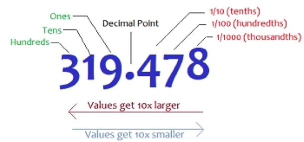
For example, the value of 789 is
= 7 x 102 + 8 x 101 + 9 x 100
= 700 + 80 + 9 = 789.
Binary Number System (Base or radix = 2)
A computer can understand only the “on” and “off” state of a switch. These two states are represented by 1 and 0. The combination of 1 and 0 form binary numbers. These numbers represent various data. As two digits are used to represent numbers, it is called a binary or base 2 number system.
The binary number system uses positional notation. But in this case, each digit is multiplied by the appropriate power of two based on its position.
For example, (101101)2 in decimal is
= 1 x 25 + 0 x 24 + 1 x 23 + 1 x 22 + 0 x 21 + 1 x 20
= 1 x 32 + 0 x 16 + 1 x 8 + 1 x 4 + 0 x 2 + 1 x 1
= 32 + 8 + 4 + 1
= (45)10
Units of measurement of data
Machine language is binary. And so, it is necessary to discuss how to measure the data stored in a computer. Bit and Byte are the units to measure data.
Bit
The term ‘bit’ is a contraction of the word’s ‘binary’ and ‘digit’. It is the smallest unit of memory or instruction that can be given or stored on a computer. A bit is either a 0 or a 1.
Nibble: Group of 4 bits is called nibble. E.g 1001 is a nibble.
Byte
A group of 8 bits like 01100001 is a byte. Combination of bytes comes with various names like the kilobyte. One kilobyte is a collection of 1000 bytes. A word or letter like ‘A’ or ‘G’ is worth 8 bits or one byte. One thousand bytes make up a kilobyte (one thousand letters approximately). 1024 kilobytes form a Megabyte (Mb) and so on.
Octal Number System (Base 8)
This system uses digits 0 to 7 (i.e. 8 different symbols/ digits) to represent a number and the numbers are as a base of 8.
For example, (24)8 in decimal is
= 2×81+4×80
= (20)10
Hexadecimal Number System (Base 16)
In this system, 16 digits used to represent a given number. Thus, it is also known as the base 16 number system. Each digit position represents a power of 16. As the base is greater than 10, the number system is supplemented by letters. Following are the hexadecimal symbols: 0, 1, 2, 3, 4, 5, 6, 7, 8, 9, A, B, C, D, E, F
To take A, B, C, D, E, and F as part of the number system is conventional and has no logical or deductive reason.
Base-16
Base-16 is also called hexadecimal (Hex 6, Decimal 10). It’s commonly used in computer programming, so it’s very important to understand.
Here’s a table with all the symbols of base-16:
| Base 16 | Values |
|---|---|
| 0 | 0 |
| 1 | 1 |
| 2 | 2 |
| 3 | 3 |
| 4 | 4 |
| 5 | 5 |
| 6 | 6 |
| 7 | 7 |
| 8 | 8 |
| 9 | 9 |
| A | 10 |
| B | 11 |
| C | 13 |
| D | 14 |
| E | 15 |
| F | 16 |
Number System Chart
| Name | Base / Radix | Symbols | Example |
|---|---|---|---|
| Decimal | 10 | 0,1,2,3,4,5,6,7,8,9 | (2795)10 |
| Binary | 2 | 0,1 | 111000010 |
| Octal | 8 | 0,1,2,3,4,5,6,7 | (1576)8 |
| Hexadecimal | 16 | 0,1,2,3,4,5,6,7,8,9,A,B,C,D,E,F | 3DB |
In the decimal system, the base is 10 and every number is written as a combination of the powers of 10. Any integral number in the decimal system when divided by 2, will either leave a remainder of 0 or 1. Thus division by Radix of binary number; 2 is a way to represent such numbers as a series of 0’s and 1’s. Therefore, to convert from decimal to binary, we keep dividing by 2 and go on recording the remainders.
Example 1: Convert the number 22 from decimal to binary.
Let us start dividing by 2 and noting the remainders.
| 2 | 22 | 0 |
|---|---|---|
| 2 | 11 | 1 |
| 2 | 5 | 1 |
| 2 | 2 | 0 |
| 1 |
Starting from the 1 at the bottom, we can write a series of 1’s and 0’s as 1, 0, 1, 1, 0. This gives the binary equivalent of the number 22. Therefore, we write the binary equivalent of 22 as 10110. If done in this way, the remainder of the first step becomes the LSD (least significant digit) whereas the remainder of the last step becomes the MSD (Most Significant Digit).
In short, if you have to convert from decimal to any number system, you should divide the number by the given base (e.g. 16 or 8 etc.).
Let us take example with integer and fraction number……
Conversion of 35.692 to Binary
Take integer no and divide by Radix 2 till the quotient becomes zero
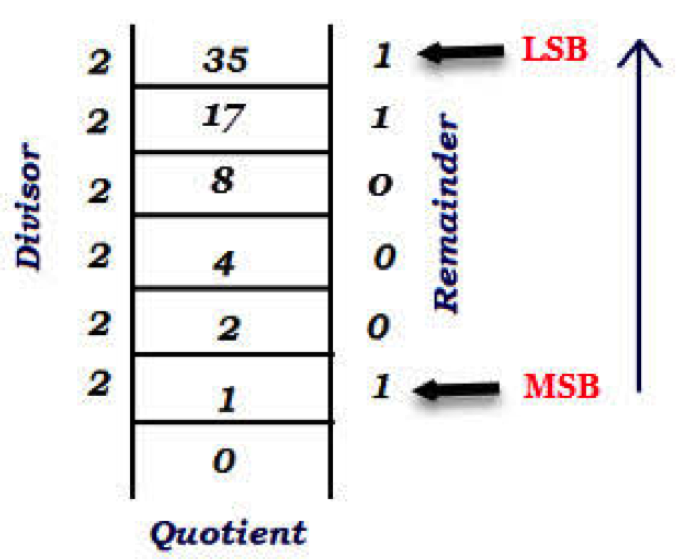
Now take fractional part
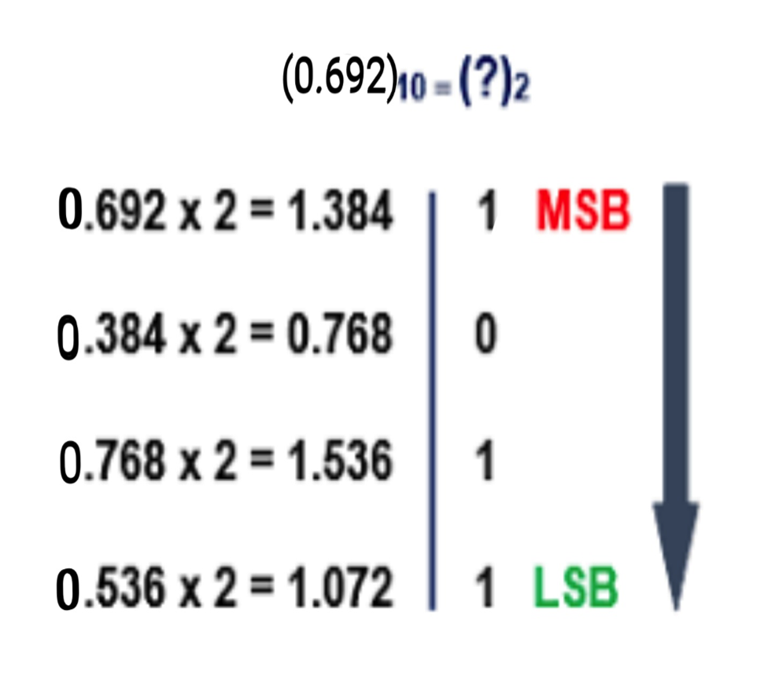
Decimal (35.692) = Binary (100011.1011)
One more fractional no 0.188
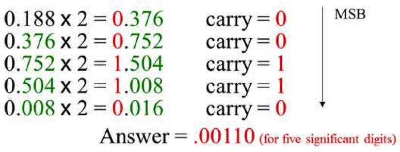
0.188 Decimal = 0.00110 binary.
The way to represent a decimal number from its binary counterpart is a reversal of the above. Therefore, what we need to do is take the binary equivalent of the number and multiply each binary digit with a power of two; where the power of 2 is derived from the place value of the binary digit.
For example, let us convert 10110 from binary to the decimal. We already know the answer to this.
10110 = Starting from the right, count the number of the digits from 0 to onwards. The digit at the extreme right is the LSD and is multiplied by 20. Similarly, the digit right next to the LSD (here =1), is multiplied by 21 and so on until we get to the MSD as shown below.
1×24 + 0×23 + 1×22 + 1×21 + 0×20
= 16 + 0 + 4 + 2 + 0 = 22 as expected.

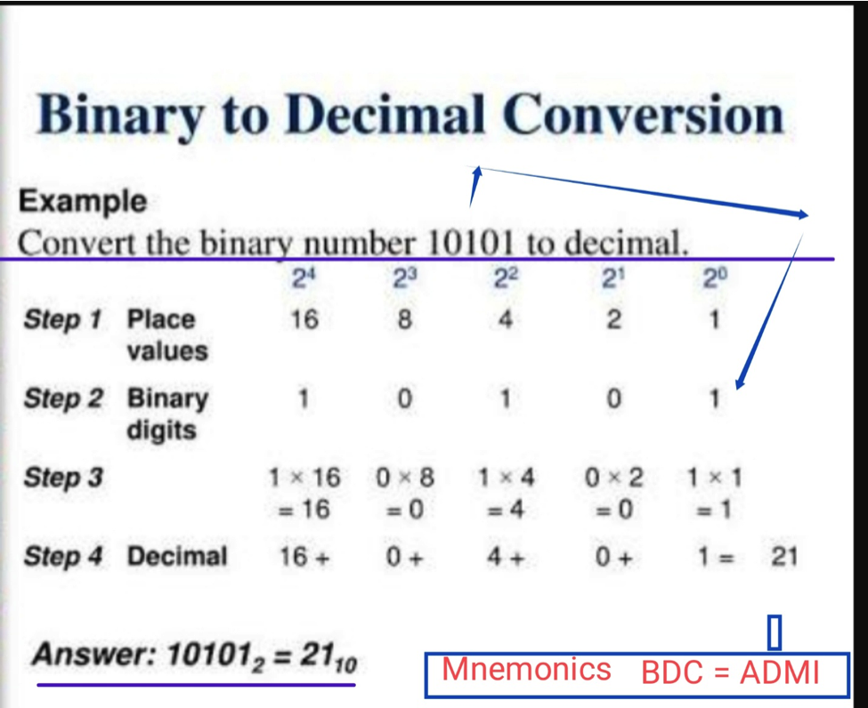
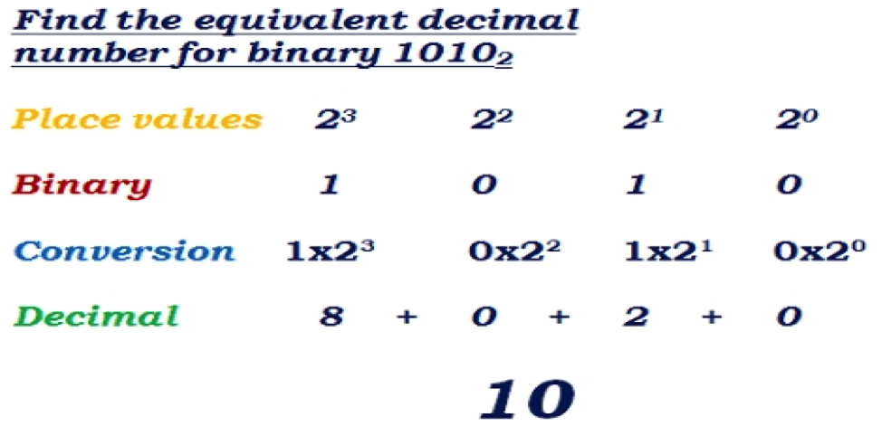
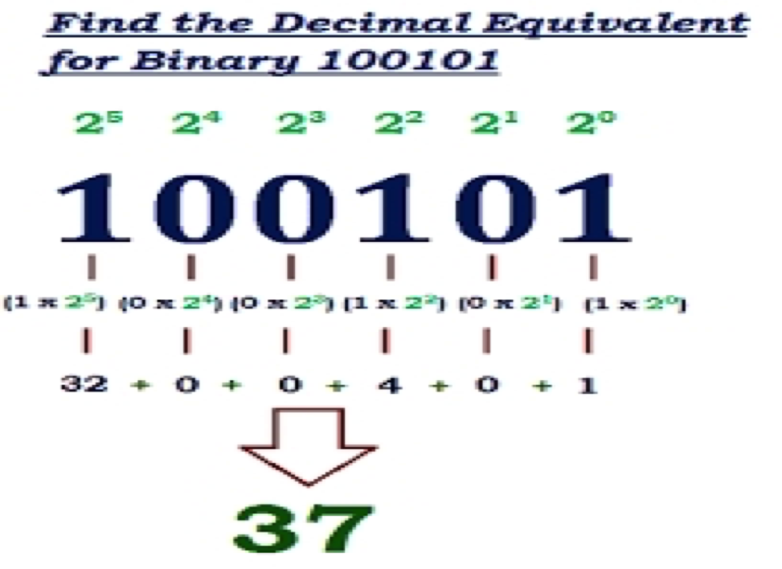
General Method
DECIMAL To OTHER Base System
The following steps follow as a natural consequence of the conversion of any decimal number to other systems with a different base (e.g. binary has a base of 2).
1: Take the decimal number that you want to convert (say 22), and divide by the number of the new base (say 2 for binary).
2: The digit that is the remainder of the first step is the LSD.
3: Keep on dividing and noting the remainders, until the quotient is zero.
4: The remainder of the step where the coefficient is zero is the most significant digit or the (MSD).
OTHER BASE System To DECIMAL System
We can use similar logic to convert from other number systems to binary. The following rules could be useful while changing from other base systems to the binary system.
1: Count the number of digits that are in the number that is to be changed from one system to another.
2: Multiply these digits by the power of the base raised by its position (as done above), starting from zero.
3: Find the sum of this product. The sum is your answer.
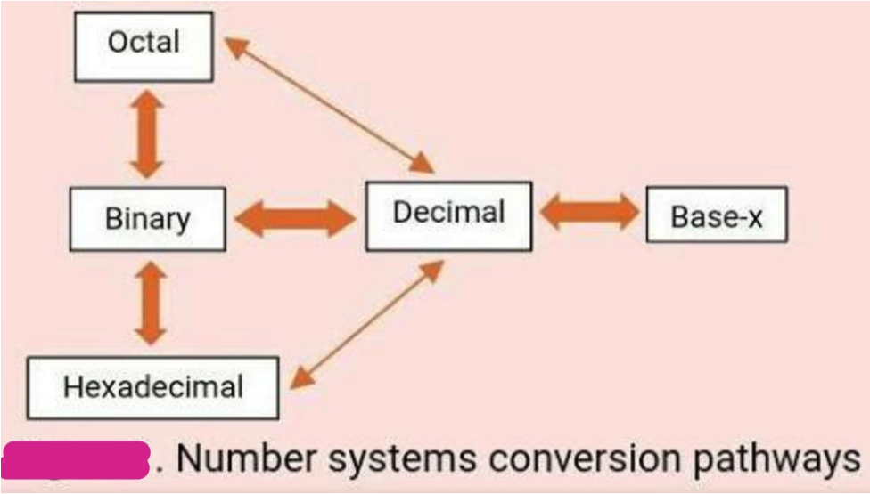
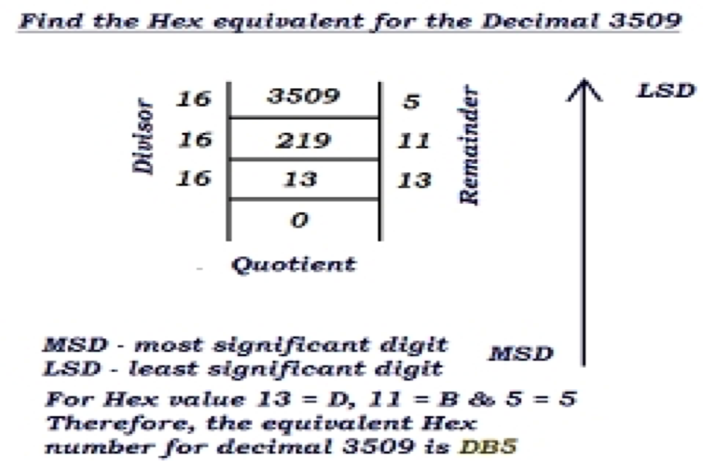
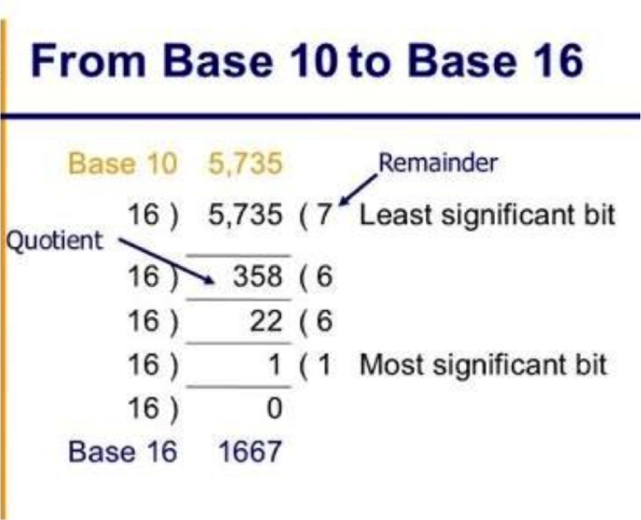
5826 Hexadecimal = ( ) decimal
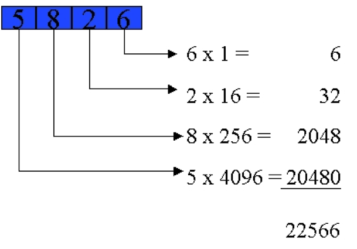
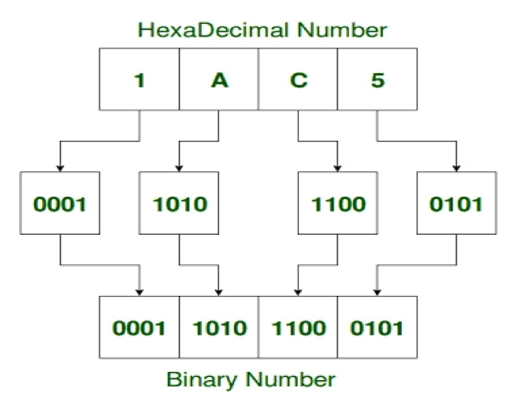
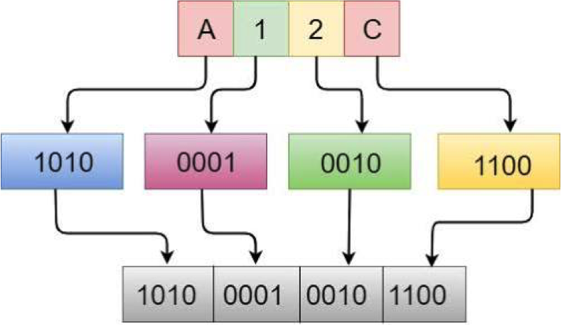
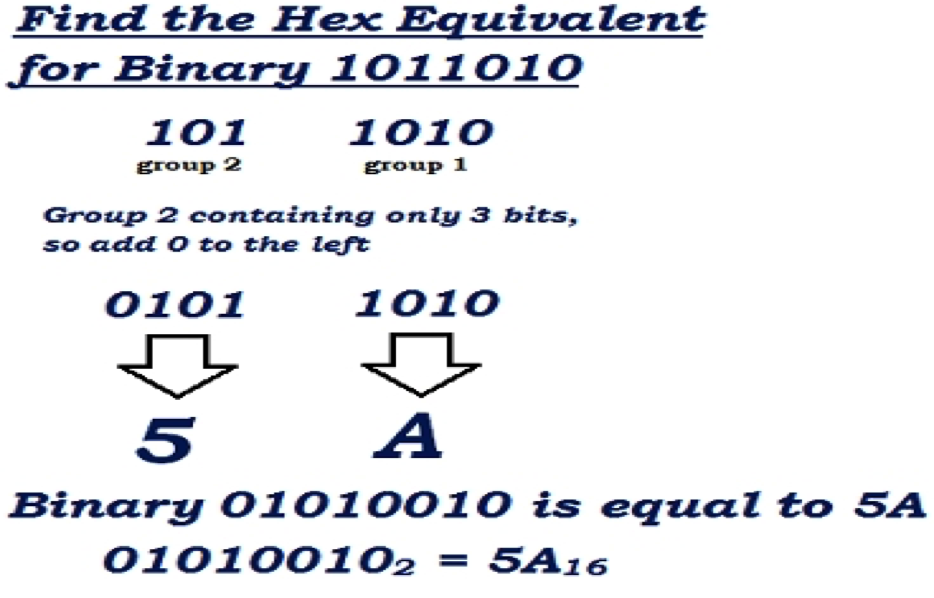
ADMI = Any other(than Decimal) to Decimal > Multiply to Integer.
DADI. = Decimal to Any other(than Decimal) > Divide to Integer.
AAG. = Any other to Any other. [16 ~ 2] > Grouping.
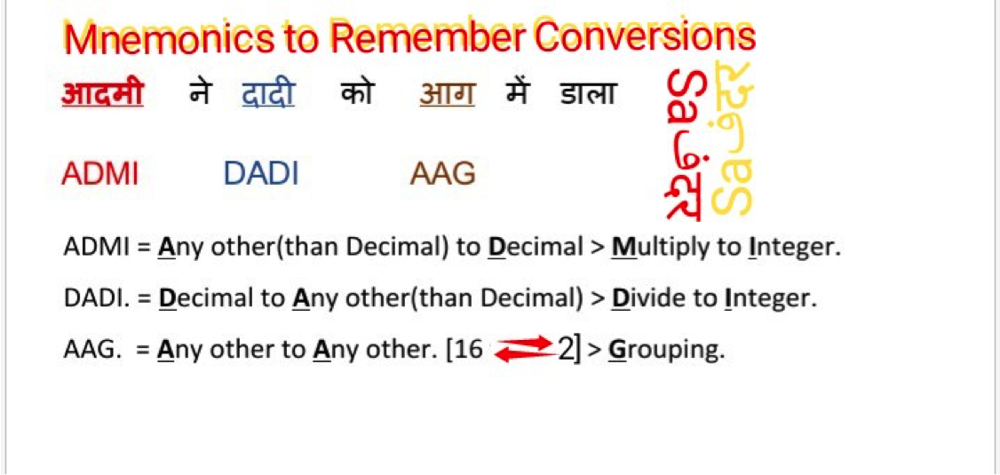
- Question1
- question 2
- question 3